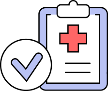
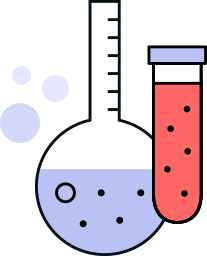
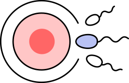
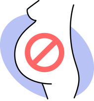
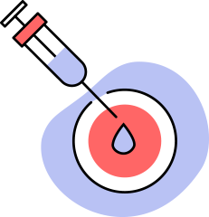
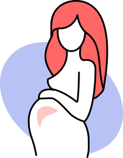

10 вопросов об ЭКО
Иногда мечты стать мамой не могут реализоваться естественно: по тем или иным причинам диагноз «бесплодие», как женское, так и мужское, затрагивает множество пар. Однако современная медицина готова предложить сразу несколько способов решения этой проблемы, самый популярный из них в последние годы — ЭКО.
Благодаря процедуре ЭКО, каждый год в России рождаются несколько десятков тысяч младенцев. Несмотря на то, что этот метод отлично изучен, о нем до сих пор распространено множество мифов. Специалисты Центра репродуктивного здоровья «СМ-Клиника» отвечают на самые популярные вопросы об ЭКО - ведь на пути к своей мечте так важно выбрать настоящих профессионалов, которым можно доверить самое ценное.
репродуктивный потенциал:
Александровна
- 1. Основные показания к процедуре ЭКО?
- 2. Как проходит подготовка к процедуре?
- 3. Как проходит сама процедура ЭКО?
- 4. Есть ли противопоказания к ЭКО?
- 5. Чем отличается ЭКО от ВМИ?
- 6. Правда ли, что после ЭКО рождаются близнецы?
- 7. Не повредит ли ЭКО малышу?
- 8. Что такое криоконсервация биологического материала?
- 9. Как проходит реабилитация после ЭКО, правда ли, что всю беременность придется лежать?
- 10. Как выбрать специалиста для ЭКО?
Основные показания к процедуре ЭКО?
Метод используют при невозможности естественной беременности, а происходит это из-за множества факторов. ЭКО назначают при эндокринном бесплодии, когда нарушена гормональная регуляция — например, отсутствует овуляция или яйцеклетки не созревают.
Кроме того, процедура может помочь стать мамами женщинам с непроходимостью маточных труб, эндометриозом, преждевременным истощением яичников. При этом, ЭКО может быть назначено и при мужском бесплодии, и при высоком риске передаче генетических заболеваний от одного из родителей. Иногда этот метод используют, даже если причины бесплодия до конца не выяснены, но основные препятствующие факторы исключены.
Как проходит подготовка к процедуре?
Несмотря на то, что процедура ЭКО распространена во множестве стран, о подготовке к ней ходит множество мифов. Важно выбрать «профильную» клинику с большим опытом проведения ЭКО и врача, который поддержит и поможет на каждом этапе. Центр репродуктивного здоровья «СМ-Клиника» специализируется на помощи пациентам с различными видами бесплодия. Здесь применяются современные протоколы лечения и технологии, а доктора помогают сделать весь процесс подготовки оптимальным, качественным и безболезненным.
Современные технологии особенно важны, ведь во время подготовки к ЭКО необходимо сдать анализы и женщине, и мужчине: женщина проходит УЗИ различных органов, осмотр гинеколога и маммолога, кольпоскопию и гистеросальпингографию, рентген грудной клетки, сдает анализы на гормоны, общий и биохимический анализ крови, общий анализ мочи; главный «мужской» анализ – спермограмма (иногда с МАР-тестом), анализы крови и также РГ грудной клетки). По результатам прохождения процедур –консультация с врачом-репродуктологом (женщина) и андрологом (мужчина). Понятно, что удобнее и оперативнее, если все процедуры можно пройти в одном медицинском центре.
Как проходит сама процедура ЭКО?
ЭКО может проходить по нескольким протоколам, в зависимости от показаний к процедуре, особенностей партнеров. Специалист с богатым опытом подберет именно тот вариант, который увеличит шансы. Специалисты ЦРЗ «СМ-Клиника» изучают анамнез пациента, чтобы подобрать оптимальный протокол.
Классический вариант ЭКО: оба партнера проходят полное обследование, затем женщина начинает курс стимуляции — гормоны помогают созреть большему количеству яйцеклеток. Забор яйцеклеток в современной клинике происходит под местным наркозом, поэтому не стоит бояться этого этапа. Перемещение эмбрионов тоже не вызывает болезненных ощущений и занимает всего пару минут.
Есть ли противопоказания к ЭКО?
Конечно, как и любое серьезное медицинское вмешательство в организм, этот метод имеет противопоказания. Например, специалист не назначит процедуру, если беременность рискованна для жизни женщины или есть тяжелые эндокринные патологии. К тому же, ЭКО противопоказано, когда вынашивание ребенка или роды невозможны.
Специалист объяснит, можно ли проводить процедуру, а если этого сделать нельзя, то посоветует альтернативный вариант.
Чем отличается ЭКО от ВМИ?
ВМИ или внутриматочная инсеминация — еще один метод, который использует современная медицина, помогая женщинам родить малыша. В отличие от ЭКО, во время ВМИ материал партнера вводится в цервикальный канал или матку женщины, чтобы оплодотворение произошло естественным образом.
Правда ли, что после ЭКО рождаются близнецы?
Этот миф очень прочно закрепился в сознании. Да, некоторое время назад, чтобы повысить шансы на успех, женщине переносили несколько эмбрионов. Но медицина шагнула далеко вперед. В современной клинике достаточно пересадить 1-2 эмбриона, чтобы беременность наступила. А в этом случае вероятность рождения близнецов, по данным Российской ассоциации репродуктологов, не превышает 18%.
Да, этот процент выше, чем при наступлении беременности естественной беременности, но все же не так велик.
Не повредит ли ЭКО малышу?
Этот вопрос, конечно, беспокоит каждую маму. Современные технологии могут пугать, но мифы о вреде такого способа оплодотворения — лишь вымыслы. ЭКО не повышает риск развития внутриутробных патологий ребенка, не приводит к глухоте или онкологии. Малыши, рожденные, благодаря процедуре, на самом деле, имеют даже меньше шансов унаследовать генетические заболевания родителей, ведь эмбрионы проходят генетический тест и отбор.
Что такое криоконсервация биологического материала?
Консервация яйцеклеток или эмбрионов — часть лечения бесплодия и процедуры ЭКО. Ведь при заборе биоматериала может получиться несколько качественных яйцеклеток, а из них - жизнеспособные эмбрионы. Подсаживаются одновременно 1-2 эмбриона, остальные замораживаются: возможно, они пригодятся для еще одной попытки, если первая прошла неудачно.
Существует и такое понятие, как «отложенное материнство» (а также «отцовство») – многие пары, желая вернуться к вопросу беременности через 10-15 лет заранее «замораживают» свой биологический материал. Делается это и том случае, если у мужчины, например, есть подозрение на рак, и впереди его с высокой долей вероятности ждут курсы химиотерапии, которые могут вызвать бесплодие.
Как проходит реабилитация после ЭКО,
правда ли, что всю беременность придется лежать?

Итак, все шаги подготовки и переноса позади. Остается ждать. Конечно, этот этап связан со стрессом, надеждой и переживаниями. Поэтому самое важное - успокоиться. Лежать две недели совершенно необязательно: эмбрион не «выпадет», если вы будете заниматься обычными делами, работать, общаться с близкими. Под запретом лишь экстремальное поведение — прыгать с парашютом точно не стоит.
Правильное питание, адекватная физическая активность, прогулки на свежем воздухе, полноценный сон и отсутствие стрессов пойдут на пользу будущей маме и повысят вероятность успеха процедуры ЭКО.
Да и всю беременность лежать тоже не придется: если ЭКО прошло удачно, женщина может наслаждаться ожиданием малыша, контролируя течение беременности, как и при естественном ее наступлении.
Как выбрать специалиста для ЭКО?
Доверить самое важное можно лишь настоящим профессионалам. Врачи-репродуктологи, акушеры-гинекологи и андрологи Центра репродуктивного здоровья «СМ-Клиника» — специалисты с огромным опытом работы, а значит, для каждого случая они подберут подходящий план лечения и протокол процедуры. Здесь нет конвейерного отношения: врач объяснит каждую деталь, не оставит без ответа ни один вопрос будущих родителей. Специалист знает, как действовать в любой ситуации, связанной с лечением и процедурой.
К тому же, благодаря современному оборудованию, шанс на успех ЭКО значительно увеличивается (превышает 40%, что является очень высоким показателем), а врачи используют актуальные технологии лечения и проводить процедуру по-настоящему качественно.
Рождение малыша — настоящее счастье, но некоторые пары лишены этой возможности. «СМ-Клиника» помогает воплотить в жизнь мечту стать родителями: современные технологии, огромный опыт специалистов и индивидуальный подход работают на то, чтобы тяжелый диагноз «бесплодие» был преодолен, и дома у счастливой пары зазвучал детский смех.
Александровна
репродуктивный потенциал:
специалистом